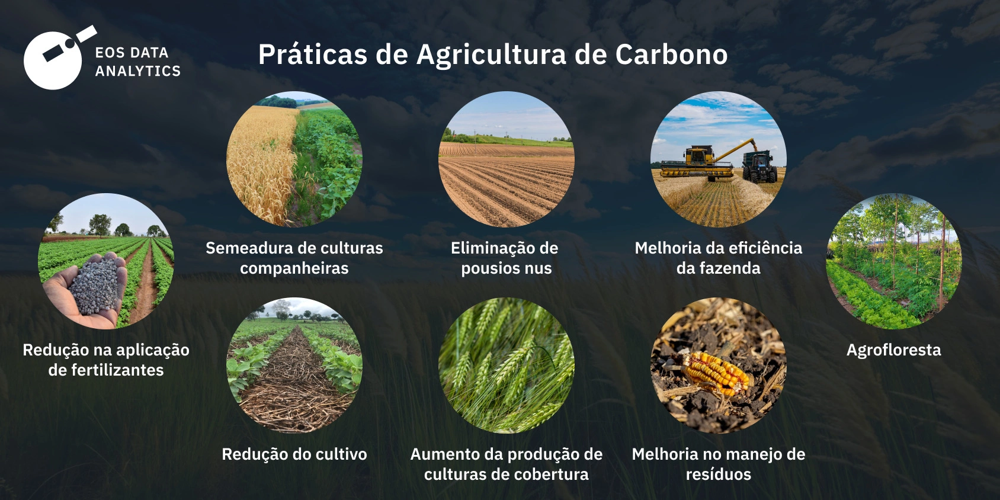

O Agro é Forte. O Futuro é Sustentável.
Como a tecnologia e a inteligência artificial estão salvando o planeta e otimizando a produção de alimentos.
Conhecer a SoluçãoO Solo e a Água: O Coração da Produtividade Sustentável
O solo e a água caminham juntos. Um solo bem cuidado funciona como uma esponja que retém a umidade, protege os recursos hídricos da propriedade e garante a sobrevivência da lavoura mesmo em tempos de seca. Cuidar desses recursos não é apenas um dever ecológico, mas o segredo para reduzir custos e aumentar a resiliência do produtor.
Como aplicar na prática?
- Proteção de Nascentes: Manter a vegetação nativa ao redor das fontes de água evita o assoreamento e garante o abastecimento de toda a propriedade.
- Manejo Inteligente da Irrigação: Utilizar técnicas que direcionam a água direto para a raiz, reduzindo o desperdício por evaporação.
2. Termômetro do Carbono: Como a Lavoura Ajuda a Limpar o Ar
As árvores e as florestas integradas às áreas agrícolas (como nos sistemas agroflorestais ou de integração lavoura-pecuária-floresta) desempenham um papel vital no combate às mudanças climáticas. Elas atuam como verdadeiros "aspiradores de pó" da atmosfera, retirando o excesso de gases poluentes e transformando-os em madeira e biomassa para o solo.
Como aplicar na prática?
- Plantio de Árvores Nativas: Isolar áreas de preservação ou criar barreiras de vento com árvores ajuda a equilibrar o microclima local.
- Sistemas Integrados: Misturar árvores com pastagens ou culturas agrícolas melhora o conforto térmico dos animais e a qualidade do solo.

Impacto do Carbono na Agricultura
O sequestro de carbono através de práticas sustentáveis é fundamental para combater as mudanças climáticas. As árvores armazenam carbono em seu tronco e raízes, ajudando a equilibrar o ciclo do carbono na atmosfera.
Investir em sistemas integrados não apenas protege o planeta, mas também aumenta a produtividade e a rentabilidade da propriedade rural.
3. Espaço Escolar: Semeando a Consciência Ambiental nas Salas de Aula
A transformação do campo e das cidades começa com a educação. Ensinar as próximas gerações sobre a importância da conservação do solo e a origem dos alimentos é fundamental para garantir um futuro onde a agricultura e a natureza caminhem lado a lado de forma harmônica.
Como aplicar na prática?
- Educação Prática: Levar o conhecimento do campo para dentro das escolas por meio de atividades lúdicas, experimentos com terra e dinâmicas em grupo.
- Apoio aos Educadores: Facilitar o acesso de professores a materiais didáticos de qualidade e com linguagem acessível sobre a ciência do solo.
🌐 Onde Buscar Mais Ajuda e Informações Oficiais?
Para aprofundar os conhecimentos técnicos integrados a essas ferramentas, você pode consultar:
- Embrapa Solos: Para entender a ciência por trás da conservação da terra.
- Agência Nacional de Águas (ANA): Para cartilhas e diretrizes oficiais sobre proteção de nascentes.
- Ministério do Meio Ambiente e Mudança do Clima (MMA): Para dados oficiais sobre o sequestro de carbono e o programa ABC+.